Огляди · журнал «ДентАрт» 2022 №1
Аутотрансплантація зубів. Науково обґрунтований підхід
Autotransplantation of teeth. Evidence-based approach
Збереження натуральних зубів навіть за наявності в них ендодонтичної та періодонтальної патології є кращим у порівнянні з імплантацією. Однак у деяких випадках потрібне видалення зуба.
Вступ
Видалення зуба призводить не тільки до втрати жувальної функції, але й до зниження стимуляції кори головного мозку через втрату пропріоцептивної функції періодонтальної зв'язки. Наявність проблем і ускладнень при класичній імплантації призвела до переоцінки підходів до лікування. Несприятливі результати, пов'язані з імплантацією, здебільшого викликані некоректно виконаним протезуванням та періімплантитами.
Крім того, альвеолярний ріст верхніх щелеп у фронтальному відділі не припиняється після піку статевого дозрівання і триває протягом усього життя пацієнта. Незважаючи на те, що цей процес виражений переважно у 20-30 років, він продовжується і в пізнішому віці. Відтак встановлення імплантата у фронтальній ділянці може викликати естетичні питання через інфрапозицію імплантата, спричинену прогресуючим ростом альвеолярного відростка у зоні сусідніх зубів та відсутністю періодонтальної зв'язки в зоні дентального імплантата. Ця ситуація найбільш імовірна у підлітків, особливо з видовженим типом обличчя, тому встановлення дентальних імплантатів у цьому разі не рекомендоване.
У такому випадку одним з варіантів лікування є аутотрансплантація зубів, яка полягає у видаленні і переміщенні зуба в інше місце у ротовій порожнині того ж пацієнта найменш травматичним способом. Трансплантований зуб має низку переваг у порівнянні з дентальним імплантатом. У такому випадку зберігається періодонтальна зв'язка і, як наслідок, пропріоцептивна чутливість, зберігається об'єм альвеолярної кістки й не порушується розвиток зубощелепної системи. У багатьох ситуаціях можлива регенерація пульпи та продовження формування кореня при трансплантації зуба-донора з неповним дозріванням кореня і вітальною пульпою.
Трансплантація зубів має давню історію: у Стародавньому Єгипті рабів змушували віддавати свої зуби фараонам. На початку ХІХ століття у Лондоні трансплантація зубів стала звичайним явищем у стоматологічних кабінетах з успішністю цієї операції у періоді спостережень до 6 років. Одна з перших процедур повністю описана французьким лікарем П'єром Фошаром у його книзі «Хірургічна стоматологія», виданій у 1728 році. Він хірургічно перемістив зуб з однієї частини зубного ряду в іншу у одного пацієнта.
На початку 50-х років минулого століття ця техніка набула більшого поширення. При цьому зруйновані перші моляри заміщалися на треті моляри, що не прорізалися, з несформованою верхівкою. Успішність становила менше 50%, і тому ця техніка не була популярною. Разом з тим поліпшення розуміння біології процесів, розвиток технологій і технік, ціла низка клінічних та експериментальних досліджень за останні 40 років засвідчили, що ця процедура може бути більш передбачуваною з успішними результатами і у віддалені терміни.
Найпоширенішими показаннями до аутотрансплантації є: непоновлювані моляри та фронтальні зуби, відсутність фронтальних зубів при агенезії (адентії) чи авульсії, ретеновані або ектоповані передні зуби, а також зуби, в яких неможливо зробити ортоекструзію. У цих випадках аутотрансплантація є чудовою альтернативою. Як правило, найчастіше трансплантуються премоляри, ікла, різці та треті моляри.
Незважаючи на те, що аутотрансплантація має довгострокові успішні результати, пацієнти повинні бути поінформовані про можливі ускладнення, пов'язані з процедурою видалення зуба-донора і можливою недостатністю альвеолярної кістки реципієнтної зони. До найчастіших ускладнень належать запальна або замісна резорбція, некроз пульпи, відсутність загоєння або порушення загоєння періодонтальної зв'язки, а також зменшення довжини кореня. Також вона протипоказана дітям і підліткам через продовження росту альвеолярного відростка.
На ймовірність успіху аутотрансплантації впливають кілька факторів: стадія розвитку кореня, морфологія зуба, обрана хірургічна процедура, час позаротових маніпуляцій, форма лунки реципієнта, васкуляризація ложа реципієнта та життєздатність клітин періодонтальної зв'язки зуба.
Хірургічний протокол операції
Протокол операції насамперед передбачає місцеву анестезію в зоні нижньоальвеолярного нерва (на нижній щелепі) або заднього верхнього альвеолярного нерва (на верхній щелепі). У разі повної ретенції третього моляра в альвеолярній кістці для доступу до операційного поля відкидають трикутний клапоть, а якщо зуб у ротовій порожнині, робиться внутрішньосулькулярний розріз уздовж ясенної борозни з метою збереження періодонтальної зв'язки і з подальшим вилученням зуба. Таким чином видаляють третій моляр атравматичним шляхом.
Видалений зуб зберігається у збалансованому сольовому розчині Хенкса або в пастеризованому молоці. Після цього реципієнтна зона препарується за допомогою хірургічних борів на низьких обертах з постійним охолодженням фізіологічним розчином. Потім у підготовлену зону встановлюють зуб-донор з урахуванням виведення з оклюзійного контакту для усунення дестабілізуючих оклюзійних навантажень. Для фіксації краща більш гнучка шина, ніж жорстка. Це забезпечує легшу реваскуляризацію пульпи. Навколишні м'які тканини ушиваються швами, що розсмоктуються або не розсмоктуються.
Післяопераційний догляд передбачає гігієну ротової порожнини з ополіскуванням 0,12% розчином хлоргексидину глюконату, рідку дієту і м'яку їжу, антибактеріальну терапію та за необхідності – протизапальні препарати. Зняття швів можливе за тиждень, а шину знімають через 2-4 тижні.
При аутотрансплантації зубів з повним формуванням кореня через 2-3 тижні проводять ендодонтичне лікування для запобігання інфікуванню пульпи з періапікальної зони та можливій запальній резорбції кореня. Повторні спостереження та огляди слід робити через 1, 3, 6, 9 і 12 місяців з метою клінічної оцінки рухливості, чутливості до перкусії і глибини періодонтального зондування, а також рентгенологічної оцінки періостатусу, можливої наявності ознак резорбції або деструкції кісткової тканини.
Вплив стадії дозрівання кореневої частини
Етап формування кореня має дуже важливе значення під час аутотрансплантації. В аутотрансплантованих зубах з неповним дозріванням кореня загоєння пульпи становить 96% порівняно з 15% у зубах з повним формуванням кореня.
Однак при аутотрансплантації можуть спостерігатися деякі ускладнення. До найпоширеніших належать некроз пульпи, анкілоз і резорбція кореня. Ці ускладнення безпосередньо пов'язані зі стадією дозрівання кореня та здатністю до реваскуляризації. Сформованість кореня до 75% його довжини має більшу тенденцію до реваскуляризації. Вітальність зуба після аутотрансплантації забезпечується регенерацією судинної тканини пульпи за рахунок капілярів, що йдуть від ще не повністю сформованої верхівки кореня. Автори називають різні рентгенологічні показники формування кореня для успішної аутотрансплантації – від 2-3 мм до 3-5 мм.
Зважаючи на те, що несформовані треті моляри мають гарне кровопостачання і багатий запас стовбурових клітин, розвиток кореня після трансплантації залежить від збереженої активності епітеліальної оболонки Гертвіга. Її наявність не тільки веде до формування кореня, але також впливає і на загоєння періодонта. Враховуючи ці фактори, для аутотрансплантації слід обирати несформовані зуби від пізньої 2-ї стадії розвитку кореня (сформований наполовину) до 4-ї стадії (від трьох чвертей до майже повного формування). Збереження життєздатності зуба важливе для правильного розвитку альвеолярного гребеня та запобігання анкілозу або резорбції кореня.
Стадії розвитку кореня моляра
- Корені сформовані на чверть своєї довжини;
- корені сформовані на половину своєї довжини;
- корені сформовані на три чверті своєї довжини;
- корені сформовані на всю довжину з відкритими верхівками;
- корені сформовані на всю довжину з відкритими верхівками;
- корені із закритими верхівками.
Етап атравматичного видалення зуба
Один із важливих факторів успішності аутотрансплантації – забезпечення мінімальної травматизації поверхні кореня під час екстракції. Слід максимально уникати пошкодження періодонтальної зв'язки зуба-донора. Перед екстракцією роблять внутрішньосулькулярний розріз для збереження періодонтальної зв'язки і видаляють зуб максимально повільно й атравматично. Для полегшення видалення ретенованих третіх молярів і мінімізації пошкоджень періодонтальних волокон, а також для зниження ризику виникнення анкілозу або резорбції кореня може бути використана п'єзохірургія. Потім під час підготовки реципієнтної ділянки зуб зберігають у збалансованому сольовому розчині Хенкса. Цей розчин найбільш придатний для підтримання життєздатності клітин періодонтальної зв'язки. Як альтернативу можна використати пастеризоване молоко, яке має фізіологічно сумісний рН, осмоляльність щодо клітин на поверхні кореня, а також поживні речовини і чинники росту.
Чим більший часовий інтервал між екстракцією і трансплантацією, тим прогноз більш несприятливий. Його слід знизити максимально. Оптимальний період позаротового часу важливий для збереження вітальності клітин періодонтальної зв'язки, які мають залишатися життєздатними протягом 18 хвилин. Після закінчення цього часу клітини зазнають гіпоксії, що згодом може призвести до некрозу і запальної резорбції кореня.
Підготовка реципієнтної ділянки потребує певного часу, бо потрібне неодноразове припасування зуба-донора для коректного його розташування. Таким чином, існує ризик того, що зуб залишиться поза ротовою порожниною протягом тривалого часу. З метою скорочення цього періоду було запропоновано використовувати роздруковану 3D репліку, щоб забезпечити час, потрібний для препарування. Це дозволяє уникнути тривалого перебування зуба, що трансплантується, поза ротовою порожниною, а також зменшує кількість спроб позиціонування зуба в лунці і тим самим знижує ризик пошкодження періодонтальної зв'язки. Перед операцією пацієнтові роблять КПКТ для отримання необхідних даних про зуб-донор та виготовлення його репліки.
Роль періодонтальної зв'язки у протоколі аутотрансплантації
Періодонтальна зв'язка – один з найважливіших факторів успіху аутотрансплантації. Відновлення прикріплення між сполучною тканиною періодонтальної зв'язки кореня зуба-донора та стінкою реципієнтної альвеоли відбувається приблизно через два тижні після процедури. У періодонтальній зв'язці є клітини, які генетично мають здатність диференціюватися у фібробласти, остеобласти та цементобласти. Імовірно, клітини періодонтальної зв'язки на зовнішній апікальній поверхні зуба диференціюються в цементобласти і стимулюють відкладення дентину, тоді як клітини, звернені до поверхні стінки лунки, диференціюються в остеобласти, тим самим стимулюючи формування кісткової тканини.
Для збереження періодонтальної зв'язки дуже важливим є обережне вилучення зуба-донора. Регенерація кістки в реципієнтній ділянці після трансплантації відбувається при збереженні клітин періодонтальної зв'язки зуба-донора. Загоєння поверхні кореня залежить від ступеня його пошкодження. На невеликих ділянках пошкодженої поверхні періодонта може відбуватися цементне загоєння. Однак при великих дефектах відбувається резорбція поверхні кореня і заміщення дентину кісткою, що призводить до втрати кореневої частини зуба. Періодонтальна зв'язка чутлива до змін осмотичного потенціалу та кислотності, а фібробласти гинуть у разі тривалого впливу позаротового середовища. Крім того, пересушування зуба протягом 30 і 60 хвилин може призвести відповідно до запальної резорбції кореня та анкілозу. Регенеративний потенціал клітин періодонтальної зв'язки знижується з віком, що може перешкоджати нормальній інтеграції зуба-донора в реципієнтній ділянці. Ортодонтичне лікування не впливає негативно на стан періодонта трансплантованих третіх молярів із незавершеним формуванням кореня.
До несприятливих прогностичних факторів аутотрансплантації можна віднести глибину кишені зуба-донора понад 4 мм, вік понад 40 років і проведене раніше ендодонтичне лікування. Також бажано не робити ротацію зуба-донора при його пересадці та уникати пошкоджень цементу, оскільки це може спровокувати резорбцію.
Підготовка реципієнтної зони
Однією з умов успішної аутотрансплантації є достатньо велика реципієнтна ділянка. Мезіодистальний розмір зуба, що трансплантується, має відповідати розміру реципієнтної зони. У разі трансплантації на постекстракційній ділянці свіжовидаленого зуба зазвичай є достатня кількість кістки. Якщо зуб був видалений кілька місяців тому з частковою або повною регенерацією кістки, реципієнтну зону створюють за допомогою хірургічних борів. Лунка препарується трохи більше, ніж лунка донора, з використанням кулястих хірургічних борів на низьких обертах з постійним охолодженням фізіологічним розчином. Установлюють зуб у лунку з мінімальним тиском.
Потрібно перевірити відповідність між зубом-донором і реципієнтною ділянкою. Усі нерівності стінки лунки відразу видаляють. За наявності вираженої атрофії альвеолярного відростка через адентію або ранню втрату зуба кісткова підтримка трансплантата буде недостатньою. Крім того, якщо зуб-донор розташований на реципієнтній ділянці з невідповідним вестибуло-оральним простором, може статися протрузія кореня через розширення кістки та резорбцію альвеолярного гребеня.
Таким чином, відсутність достатнього об'єму вестибулярної кортикальної кістки і вузька реципієнтна ділянка вважаються факторами ризику операції аутотрансплантації. Невідповідність розмірів реципієнтної ділянки і морфології кореня зуба, що трансплантується, може призвести до некрозу пульпи. При трансплантації зубів із верхньої щелепи на нижню, а також третіх молярів верхньої щелепи на місце перших молярів верхньої щелепи спостерігається низький рівень успішності через різну морфологію відповідних коренів. Існує пряма залежність між порушенням реваскуляризації і збільшенням відстані між верхівкою кореня та альвеолярною поверхнею.
Періодонтальна зв'язка аутотрансплантованих зубів може індукувати утворення альвеолярної кістки. Однак у випадках атрофії альвеолярного відростка рекомендується використання вільних кісткових аутотрансплантатів. Ще одним варіантом оперативного втручання при недостатньому обсязі кістки є остеотомія з розщепленням. У той же час при порівнянні розщеплюючої остеотомії з дентальними трансплантатами та використанням кісткових аутотрансплантатів, а також хірургічно створених альвеолярних трансплантатів, розщеплююча остеотомія характеризується вищою частотою запальної резорбції кореня і нижчим відсотком успішності.
Для забезпечення стабілізації зуба в реципієнтній зоні потрібна наявність кісткової підтримки з достатньою кількістю прикріпленої кератинізованої м'якої тканини без ознак запалення. Тому, незважаючи на те, що протоколи передбачають односеансну аутотрансплантацію в зону видаленого зуба, у разі періапікального ураження зуба, що видаляється, процедуру аутотрансплантації слід відкласти. Також близьке розташування анатомічних структур, таких як нижньощелепний канал, ментальний отвір або верхньощелепна пазуха, періапікальне ураження можуть ускладнити процедуру кюретажу. Залишки запаленої тканини можуть порушити процеси репарації кісткової та м'яких тканин після аутотрансплантації. У таких випадках слід відкласти другу фазу аутотрансплантації на період від 8 до 12 тижнів з метою усунення запального процесу, тоді як маніпуляції з реципієнтною ділянкою будуть зручнішими через незрілість остеогенної кісткової тканини.
Установка, позиціонування і стабілізація трансплантованих зубів
Розташування зуба-донора в реципієнтній зоні має забезпечувати біологічну ширину, подібну до ширини зуба, що прорізався природно. Зуб-донор, поміщений у реципієнтну зону, не повинен перебувати в оклюзії, щоб жувальні навантаження не порушували процеси загоєння періодонта після трансплантації.
Для забезпечення успіху операції потрібне коректне закриття ясенного клаптя навколо трансплантованого зуба. Інтеграція зуба-донора значною мірою залежить від відсутності бактеріальної інвазії згустка між коренем і альвеолою, тому в ряді випадків потрібна корекція клаптя та його ушивання до встановлення зуба в альвеолу.
Після встановлення зуб слід стабілізувати. Перед операцією, а також до і після шинування роблять рентген-дослідження для оцінки розташування зуба-донора у новому місці. Вплив типу стабілізації на загоєння періодонта залишається спірним. Існують різні методи стабілізації трансплантованих зубів, такі як фіксація ортодонтичними брекетами, лігатурами, шовним матеріалом і композитними матеріалами, при яких період іммобілізації варіюється від 1 до 4-6 тижнів.
Спочатку вважалося, що використання жорстких шин для іммобілізації до 3 місяців викликає регенерацію періодонта. Однак такий тип шинування трансплантованого зуба може призвести до порушення реваскуляризації пульпи. Утворення нових судин стимулюється невеликими мікроекскурсіями при функціонуванні трансплантованого зуба, а зниження рухливості трансплантата жорсткою шиною негативно впливає на реваскуляризацію. Це пояснює часті випадки некрозу пульпи при використанні жорстких шин. Через знижену васкуляризацію трансплантованого зуба виникає дефіцит живлення епітеліальної оболонки Гертвіга, що впливає на дозрівання кореня. Крім того, при стабілізації зубів жорстким шинуванням їх розташовують занадто високо – з метою зменшення травми ясен дротом шини або композитом. У результаті більша відстань між основою лунки і коренями викликає проблеми з реваскуляризацією та розвитком оболонки Гертвіга. Шини також можуть впливати на гігієну ротової порожнини і регенерацію періодонта, призводячи до ускладнень, таких як запальна резорбція кореня або анкілоз, а також погіршення довгострокових результатів. Жорстка шина рекомендується лише в тому випадку, якщо зуб-донор має низьку стабільність. Шину ретельно підбирають, оскільки вона відіграє фундаментальну роль в успіху всієї процедури.
Найбільш бажане короткострокове гнучке шинування. Стабілізація зуба-донора робиться швами на період 7-10 днів. Існує методика без стабілізації, при якій ретенція забезпечується за рахунок щільного контакту із сусідніми зубами. При цьому альвеола препарується таким чином, щоб забезпечити максимальний контакт із зубом-донором. Слід перевірити оклюзію, щоб переконатися у відсутності оклюзійних блоків. Після цього потрібно оцінити тип майбутньої реставрації.
Для захисту трансплантата від інфекції та загоєння ранової поверхні протягом перших 2-4 днів може накладатися хірургічна (пародонтальна) пов'язка. Пацієнт отримує інструкції щодо особливостей гігієни ротової порожнини та дієти у перший післяопераційний тиждень. Наступний візит зазвичай призначається через 7-10 днів для зняття швів.
Показання до ендодонтичних втручань
У зубах з повністю сформованими коренями реваскуляризація пульпи у значній більшості випадків не відбувається. Лише 15% зубів із закритою верхівкою ревіталізуються після процедури аутотрансплантації – на відміну від 96% зубів з відкритою верхівкою. Тому зуби з цілком сформованими коренями потребують повноцінного ендолікування протягом 1-2 тижнів після аутотрансплантації – з метою запобігання інфікуванню пульпи, наступному періапікальному запаленню і запальній резорбції кореня. Такий період обраний для мінімізації травми періодонтальної зв'язки у фазі загоєння первинного прикріплення, тоді як триваліший період збільшує ймовірність запальної резорбції внаслідок інфікування та некрозу пульпи.
Якщо доступ до зуба-донора нескладний, то можна обробити кореневий канал до його атравматичного видалення. Треті моляри часто мають складну анатомічну будову кореневих каналів, що ускладнює їх ендодонтичне лікування. У таких випадках можлива апікальна резекція зуба, який трансплантується, що дозволяє видалити більш складну частину кореня і знижує можливі ускладнення майбутнього ортоградного лікування. При видаленні апікальної частини кореня та формуванні апікальної пробки ретроградним способом досягаються краща дезінфекція, очищення та формування за рахунок отримання пряміших, ширших і значно коротших каналів. Якщо під час апікоектомії і ретроградного закриття каналів зберігається адекватна стерильність, то можна уникнути ортоградного ендодонтичного лікування або відтермінувати його.
Тимчасові вкладення гідроксиду кальцію при ендодонтичному лікуванні можуть сприяти процесові загоєння і відкладення мінералізованої тканини завдяки високому рівню pH і високим антимікробним властивостям. Ендодонтичне лікування після трансплантації впливає на вищу виживаність зубів у порівнянні з екстраоральним або передопераційним ендодонтичним лікуванням, оскільки воно збільшує часовий інтервал між екстракцією і трансплантацією. Також існує ризик пошкодження волокон і клітин періодонтальної зв'язки при проведенні екстраорального ендодонтичного лікування.
Протокол хірургічних і лікувальних заходів при аутотрансплантації
- Анестезія.
- Доступ до зони хірургічного втручання.
- Атравматичне видалення зуба і збереження його у збалансованому фізіологічному розчині Хенкса.
- Підготовка реципієнтної зони і зрошення стерильним фізіологічним розчином.
- Укорінювання зуба-донора нижче оклюзійної площини і стабілізація гнучкою шиною.
- Ушивання клаптя.
- Призначення пацієнтові: антибактеріальна терапія, рідка дієта і м'яка їжа, ополіскування 0,12% хлоргексидином протягом 1 тижня.
- Зняття швів через 1 тиждень та шини через 2-4 тижні.
- Ендодонтичне лікування за повної сформованості коренів трансплантованого зуба через 2-3 тижні.
Клінічний випадок
Пацієнтка Г., 40 років, з несприятливим реставраційним, періо- та ендопрогнозом у зубі 47. На консультативному прийомі рекомендовано видалення зуба. Як альтернативний підхід запропонована аутотрансплантація ретенованого та дистопованого зуба 48.
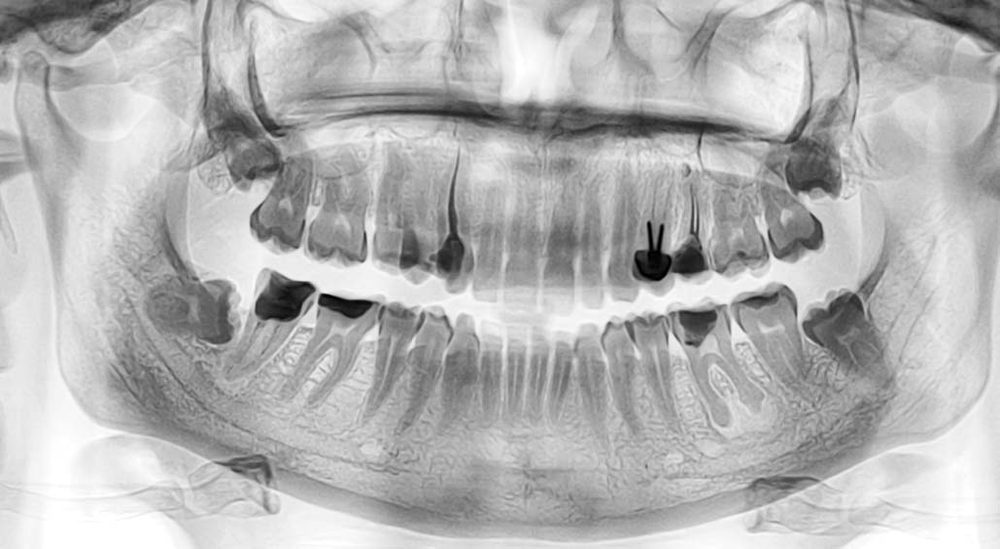
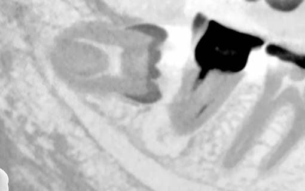
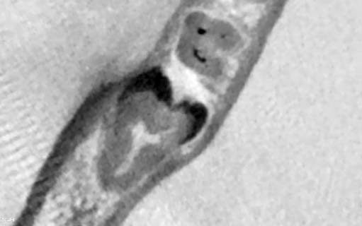
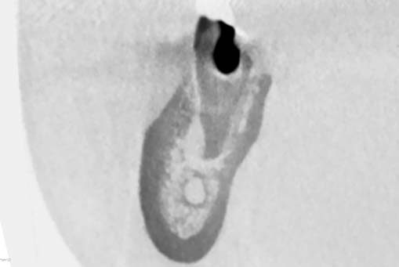
Хірургічну частину виконав лікар-хірург Олег Страшко (м. Харків). Після екстракції неспроможного зуба 47 зроблено підготовку реципієнтної зони. Після цього проведено атравматичне видалення зуба 48 і його трансплантацію у раніше підготовлену лунку зуба 47. Зуб був виведений з прикусу і ушитий перехресними швами.
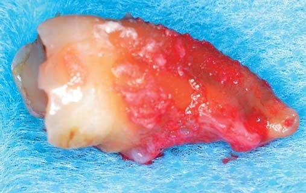
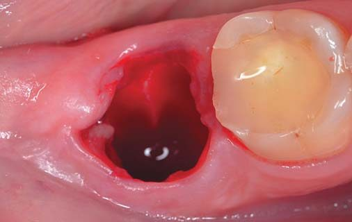
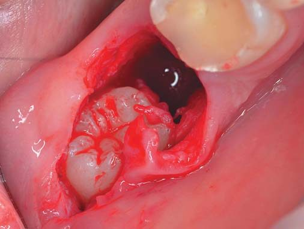
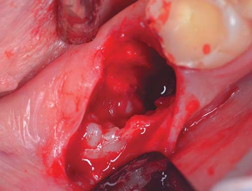
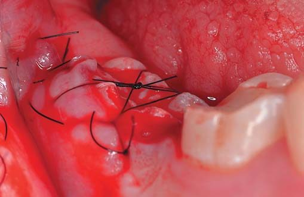
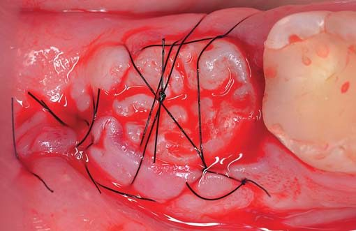
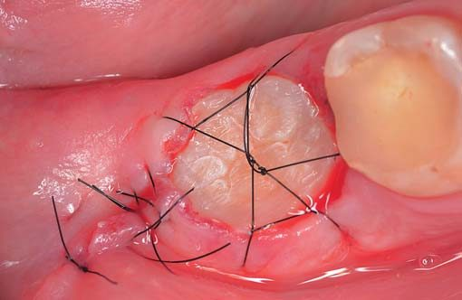
Через 4 дні при повторному візиті шви знято і зроблено оцінку операційної зони. Через 4 тижні проведено ендодонтичне лікування зуба 48 з подальшим встановленням постійної композитної пломби. Ще через 5 місяців зуб 48 покритий керамічною накладкою.
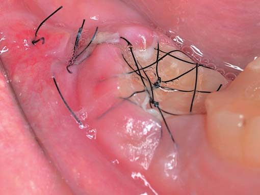
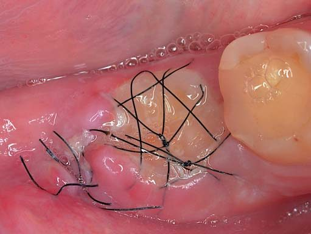
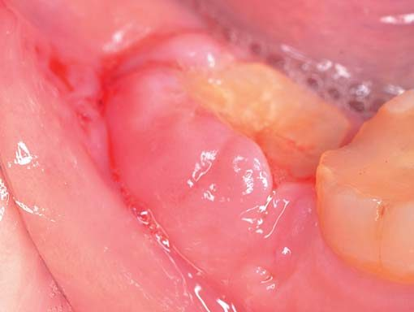
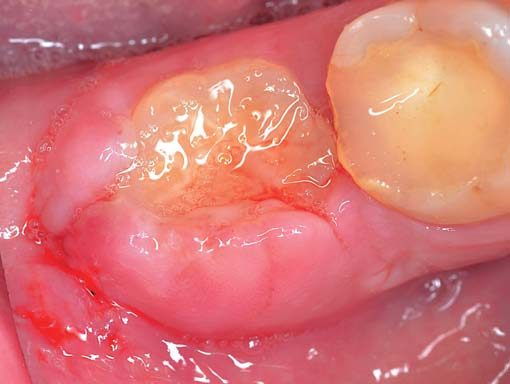
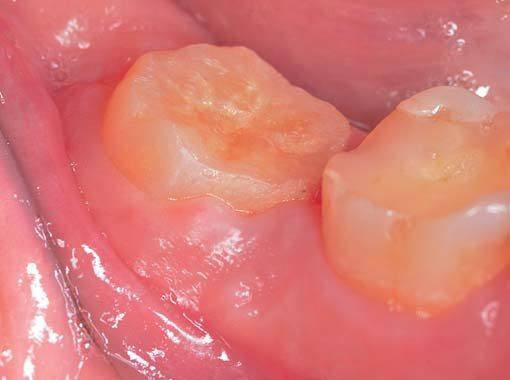
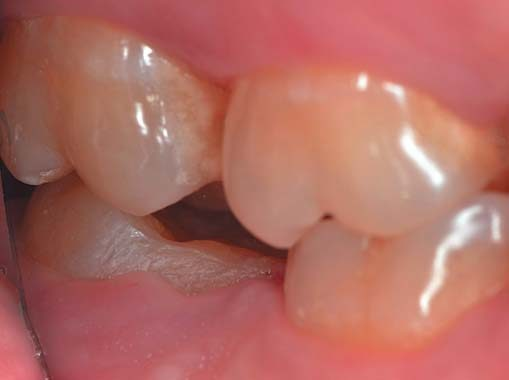
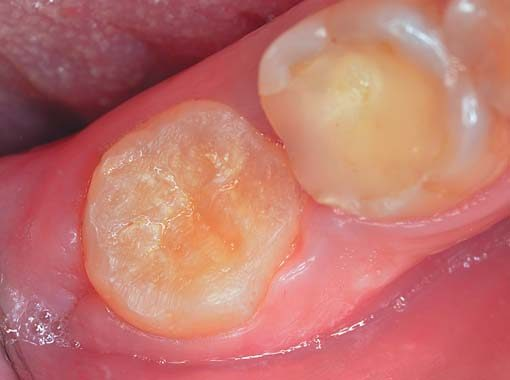
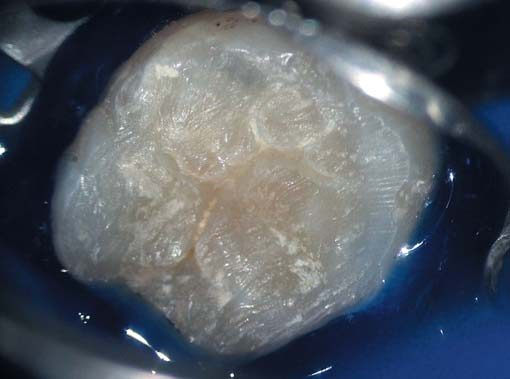
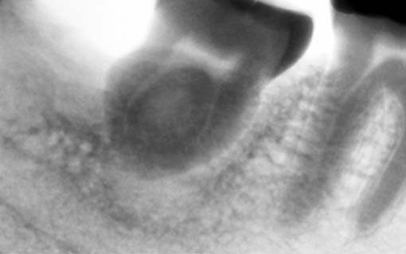
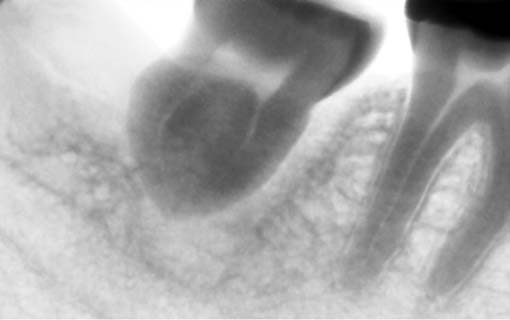
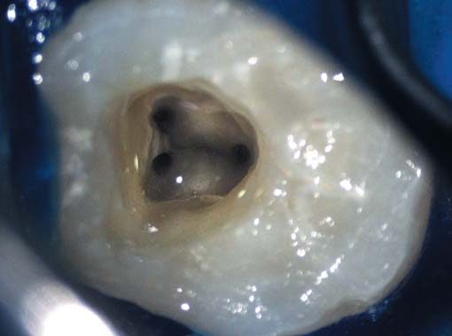
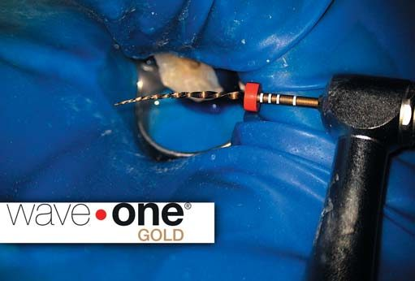
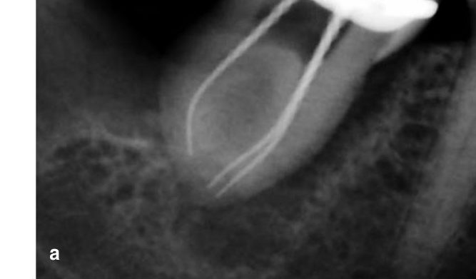
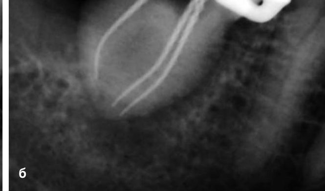
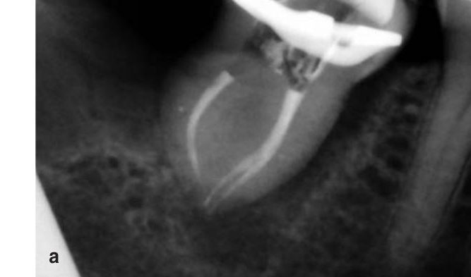
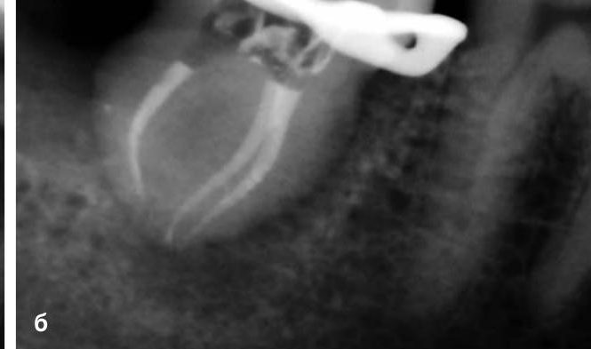
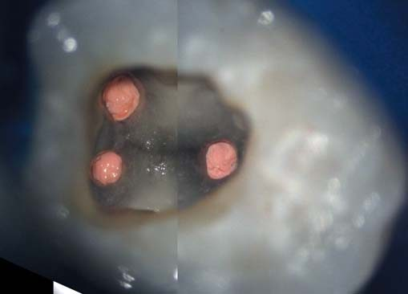
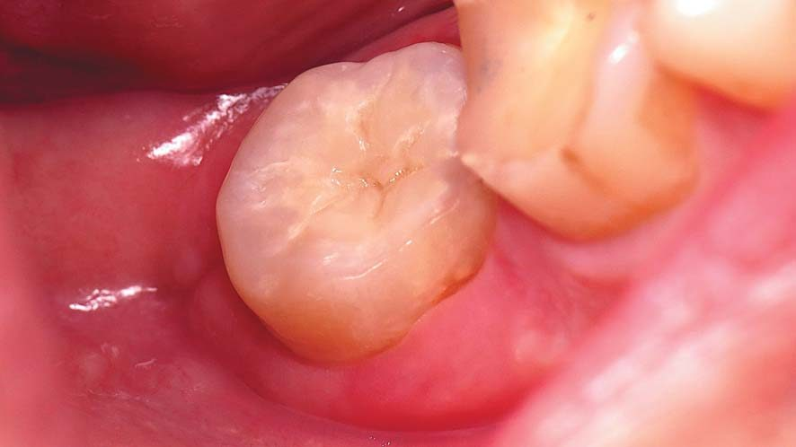
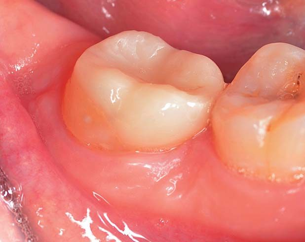
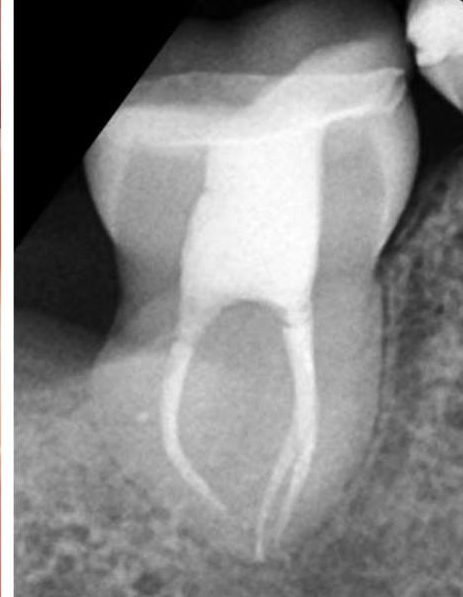
Висновки
Аутотрансплантація зубів – чудове рішення для заміщення відсутніх зубів. Обов'язковою умовою є коректні хірургічні маніпуляції, які мають бути якомога атравматичнішими для збереження періодонтальної зв'язки трансплантованого зуба. Успішність лікування також пов'язана і зі стадією розвитку кореня. В аутотрансплантованих зубах з неповним дозріванням кореня загоєння пульпи становить 96%. При повному формуванні кореня приблизно через 2 тижні потрібне ендодонтичне лікування.
Аутотрансплантація не є рутинною практикою, однак за правильного дотримання протоколу аутотрансплантації можна отримати довгостроковий успішний результат.
Автор висловлює подяку Олегові Страшку, стоматологічна клініка «YOUR DENTIST» (м. Харків, Україна), за надані матеріали клінічного випадку, що ілюструють статтю.
Література
- Giannobile W. V., Lang N. P. Are dental implants a panacea or should we better strive to save teeth? J Dent Res 2016;95(1):5–6.
- Trulsson M., Francis S. T., Bowtell R., McGlone F. Brain activations in response to vibrotactile tooth stimulation: a psychophysical and fMRI study. J Neurophysiol 2010;104(4):2257–65.
- Ono Y., Yamamoto T., Kubo K. Y., Onozuka M. Occlusion and brain function: mastication as a prevention of cognitive dysfunction. J Oral Rehabil 2010;37(8):624–40.
- Weijenberg R. A., Scherder E. J., Lobbezoo F. Mastication for the mind – the relationship between mastication and cognition in ageing and dementia. Neurosci Biobehav Rev 2011;35(3):483–97.
- Albrektsson T., Donos N. & Working Group 1. Implant survival and complications. The Third EAO consensus conference 2012. Clin Oral Implants Res. 2012;23 Suppl 6:63–65.
- Pjetursson B. E., Karoussis I., Bürgin W., Brägger U., Lang N. P. Patients' satisfaction following implant therapy. A 10 year prospective cohort study. Clin Oral Implants Res. 2005;16(2):185–193.
- Schwartz-Arad D., Bichacho N. Effect of age on single implant submersion rate in the central maxillary incisor region: a long-term retrospective study. Clin Implant Dent Relat Res. 2015;17(3):509–514.
- Aarts B. E., Convens J., Bronkhorst E. M., Kuijpers-Jagtman A. M., Fudalej P. S. Cessation of facial growth in subjects with short, average, and long facial types – Implications for the timing of implant placement. J Craniomaxillofac Surg. 2015;43(10):2106–11.
- Daftary F., Mahallati R., Bahat O., Sullivan R. M. Lifelong craniofacial growth and the implications for osseointegrated implants. Int J Oral Maxillofac Implants. 2013;28(1):163–169.
- Jemt T., Ahlberg G., Henriksson K., Bondevik O. Tooth movements adjacent to single-implant restorations after more than 15 years of follow-up. Int J Prosthodont. 2007;20(6):626–632.
- Cardona J. L., Caldera M. M., Vera J. Autotransplantation of a premolar: a long-term follow-up report of a clinical case. J Endod. 2012;38(8):1149–1152.
- Intra J. B., Roldi A., Brandao R. C., de Araújo Estrela C. R., Estrela C. Autogenous premolar transplantation into artificial socket in maxillary lateral incisor site. J Endod. 2014;40(11):1885–1890.
- Tsukiboshi M. Autotransplantation of teeth: requirements for predictable success. Dent Traumatol 2002;18:157–80.
- Pape H. D., Heiss R. History of tooth transplantation. Fortschr Kiefer Gesichtschir. 1976;20:121–125.
- Apfel H. Autoplasty of enuculeated prefunctional third molars. J Oral Surg (Chic) 1950;8(4):289–296.
- Apfel H. Transplantation of the unerupted third molar tooth. Oral Surg Oral Med Oral Pathol, 1956;9(1):96–98.
- Miller H. M. Transplantation. J Am Dent Assoc 1950;40(2):237, illust.
- Miller H. M. Tooth transplantation. J Oral Surg (Chic) 1951;9(1):68–69.
- Collings G. J. Dual Transplantation of third molar tooth. Oral Surg Oral Med Oral Pathol, 1951;4(10):1214–1219.
- Hale M. L. Autogenous transplant. Oral Surg Oral Med Oral Pathol. 1956;9(1):76–83.
- Natiella J., Armitage J., Greene G. The replantation and transplantation of teeth. Oral Surg 1970;29:397.
- Andreasen J. O. Atlas of replantation and transplantation of teeth. Philadelphia: W B Saunders, 1992;111–75.
- Andreasen J. O., Paulsen H. U., Yu Z., Bayer T., Schwartz O. A long term study of 370 autotransplanted premolars. Part II. Tooth survival and pulp healing subsequent to transplantation. Eur J Orthod 1990;12(1):14–24.
- Andreasen J. O., Paulsen H. U., Yu Z., Bayer T. A long term study of 370 autotransplanted premolars. Part IV. Root development subsequent to transplantation. Eur J Orthod 1990;12(1):38–50.
- Almpani K., Papageorgiou S. N., Papadopoulos M. A. Autotransplantation of teeth in humans: a systematic review and meta-analysis. Clin Oral Investig. 2015;19(6):1157–79.
- Rohof E. C. M., Kerdijk W., Jansma J., Livas C., Ren Y. Autotransplantation of teeth with incomplete root formation: a systematic review and meta-analysis. Clin Oral Investig. 2018;22(4):1613–1624.
- Thilander B., Odman J., Lekholm U. Orthodontic aspects of the use of oral implants in adolescents: A 10-year follow-up study. Eur. J. Orthod. 2001, 23, 715–731.
- Muhamad A., Nezar W., Mai A., Azzaldeen A. Tooth autotransplantation; clinical concepts. IOSR J. Dent. Med. Sci. 2016, 15, 105–113.
- Patel S., Fanshawe T., Bister D., Cobourne M. T. Survival and success of maxillary canine autotransplantation: A retrospective investigation. Eur. J. Orthod. 2011, 33, 298–304.
- Ahmed Asif J., Yusuf Noorani T., Khursheed Alam M. Tooth autotransplantation: An alternative treatment. Bull. Tokyo Dent. Coll. 2017, 58, 41–48.
- Cohen A. S., Shen T. C., Pogrel M. A. Transplanting teeth successfully: Autografts and allografts that work. J. Am. Dent. Assoc. 1995, 126, 481–485.
- Poi W. R., Sonoda C. K., Martins C. M., Melo M. E., Pellizzer E. P., de Mendonça M. R., Panzarini S. R. Storage media for avulsed teeth: A literature review. Braz. Dent. J. 2013, 24, 437–445.
- Kristerson L., Andreasen J. O. The effect of splinting upon periodontal and pulpal healing after autotransplantation of mature and immature permanent incisors in monkeys. Int. J. Oral Surg. 1983, 12, 239–249.
- Akkocaoglu M., Kasaboglu O. Success rate of autotransplanted teeth without stabilisation by splints: A long-term clinical and radiological follow-up. Br. J. Oral Maxillofac. Surg. 2005, 43, 31–35.
- Sugai T., Yoshizawa M., Kobayashi T., Ono K., Takagi R., Kitamura N., Okiji T., Saito C. Clinical study on prognostic factors for autotransplantation of teeth with complete root formation. Int. J. Oral Maxillofac. Surg. 2010, 39, 1193–1203.
- Ashurko I., Vlasova I., Yaremchuk P., Bystrova O. Autotransplantation of teeth as an alternative to dental implantation. BMJ Case Rep. 2020, 13, e234889.
- Mendes R. A., Rocha G. Mandibular third molar autotransplantation – literature review with clinical cases. J. Can. Dent. Assoc. 2004, 70, 761–766.
- Andreasen J. O. Challenges in clinical dental traumatology. Endod. Dent. Traumatol. 1985, 1, 45–55.
- Jang J. H., Lee S. J., Kim E. Autotransplantation of immature third molars using a computer-aided rapid prototyping model: A report of 4 cases. J. Endod. 2013, 39, 1461–1466.
- Erdem N. F., Gümüşer Z. Retrospective evaluation of immediate impacted third molars autotransplantation after extractions of mandibular first and/or second molars with chronic periapical lesions. J. Oral Maxillofac. Surg. 2021, 79, 37–48.
- Day P. F., Lewis B. R., Spencer R. J., Barber S. K., Duggal M. The design and development of surgical templates for premolar transplants in adolescents. Int. Endod. J. 2012, 45, 1042–1052.
- Thomas S., Turner S. R., Sandy J. R. Autotransplantation of teeth: Is there a role? Br. J. Orthod. 1998, 25, 275–282.
- Crincoli V., Di Bisceglie M. B., Scivetti M., Favia A., Di Comite M. Dens invaginatus: A qualitative-quantitative analysis. Case report of an upper second molar. Ultrastruct. Pathol. 2010, 34, 7–15.
- Kaku M., Shimasue H., Ohtani J., Kojima S., Sumi H., Shikata H., Kojima S., Motokawa M., Abonti T. R., Kawata T. et al. A case of tooth autotransplantation after long-term cryopreservation using a programmed freezer with a magnetic field. Angle Orthod. 2015, 85, 518–524.
- Hupp J. G., Mesaros S. V., Aukhil I., Trope M. Periodontal ligament vitality and histologic healing of teeth stored for extended periods before transplantation. Endod. Dent. Traumatol. 1998, 14, 79–83.
- Gugliandolo A., Fonticoli L., Trubiani O., Rajan T. S., Marconi G. D., Bramanti P., Mazzon E., Pizzicannella J., Diomede F. Oral bone tissue regeneration: Mesenchymal stem cells, secretome, and biomaterials. Int. J. Mol. Sci. 2021, 22, 5236.
- Moorrees C. F., Fanning E. A., Hunt E. E. Jr. Age variation of formation stages for ten permanent teeth. J. Dent. Res. 1963, 42, 1490–1502.
- Kallu R., Vinckier F., Politis C., Mwalili S., Willems G. Tooth transplantations: A descriptive retrospective study. Int. J. Oral Maxillofac. Surg. 2005, 34, 745–755.
- Moorrees C. F., Fanning E. A., Hunt E. E. Jr. Formation and resorption of three deciduous teeth in children. Am. J. Phys. Anthropol. 1963, 21, 205–213.
- Akiyama Y., Fukuda H., Hashimoto K. A clinical and radiographic study of 25 autotransplanted third molars. J. Oral Rehabil. 1998, 25, 640–644.
- Yan Q., Li B., Long X. Immediate autotransplantation of mandibular third molar in China. Oral Surg. Oral Med. Oral Pathol. Oral Radiol. Endod. 2010, 110, 436–440.
- Yoshino K., Kariya N., Namura D., Noji I., Mitsuhashi K., Kimura H., Fukuda A., Kikukawa I., Hayashi T., Yamazaki N. et al. A retrospective survey of autotransplantation of teeth in dental clinics. J. Oral Rehabil. 2012, 39, 37–43.
- Koszowski R., Morawiec T., Bubilek-Bogacz A. Use of the piezosurgery technique for cutting bones in the autotransplantation of unerupted third molars. Int. J. Periodontics Restor. Dent. 2013, 33, 477–481.
- Bae J. H., Choi Y. H., Cho B. H., Kim Y. K., Kim S. G. Autotransplantation of teeth with complete root formation: A case series. J. Endod. 2010, 36, 1422–1426.
- Verweij J. P., Jongkees F. A., Anssari Moin D., Wismeijer D., van Merkesteyn J. P. R. Autotransplantation of teeth using computer-aided rapid prototyping of a three-dimensional replica of the donor tooth: A systematic literature review. Int. J. Oral Maxillofac. Surg. 2017, 46, 1466–1474.
- Andreasen J. O. Interrelation between alveolar bone and periodontal ligament repair after replantation of mature permanent incisors in monkeys. J. Periodontal Res. 1981, 16, 228–235.
- Nagata M., Kanie T., Shima K. Cemental tear in an autotransplanted tooth that had been functioning for 15 years. Clin. Adv. Periodontics 2016, 6, 111–117.
- Aoyama S., Yoshizawa M., Niimi K., Sugai T., Kitamura N., Saito C. Prognostic factors for autotransplantation of teeth with complete root formation. Oral Surg. Oral Med. Oral Pathol. Oral Radiol. 2012, 114, 216–228.
- Shahbazian M., Jacobs R., Wyatt J., Willems G., Pattijn V., Dhoore E., Van Lierde C., Vinckier F. Accuracy and surgical feasibility of a CBCT-based stereolithographic surgical guide aiding autotransplantation of teeth: In vitro validation. J. Oral Rehabil. 2010, 37, 854–859.
- Bauss O., Schwestka-Polly R., Kiliaridis S. Influence of orthodontic derotation and extrusion on pulpal and periodontal condition of autotransplanted immature third molars. Am. J. Orthod. Dentofac. Orthop. 2004, 125, 488–496.
- Lindskog S., Blomlof L. Influence of osmolality and composition of some storage media on human periodontal ligament cells. Acta Odontol. Scand. 1982, 40, 435–441.
- Zhang J., An Y., Gao L. N., Zhang Y. J., Jin Y., Chen F. M. The effect of aging on the pluripotential capacity and regenerative potential of human periodontal ligament stem cells. Biomaterials 2012, 33, 6974–6986.
- Park J. H., Tai K., Hayashi D. Tooth autotransplantation as a treatment option: A review. J. Clin. Pediatr. Dent. 2010, 35, 129–135.
- Bright R., Hynes K., Gronthos S., Bartold P. M. Periodontal ligament-derived cells for periodontal regeneration in animal models: A systematic review. J. Periodontal Res. 2015, 50, 160–172.
- Liu Y., Zheng Y., Ding G., Fang D., Zhang C., Bartold P. M., Gronthos S., Shi S., Wang S. Periodontal ligament stem cell-mediated treatment for periodontitis in miniature swine. Stem Cells 2008, 26, 1065–1073.
- Feiglin B. Atlas of replantation and transplantation of teeth. Aust. Endod. Newsl. 1995, 21, 30–30.
- Andreasen J. O., Hjorting-Hansen E., Jolst O. A clinical and radiographic study of 76 autotransplanted third molars. Scand J. Dent. Res. 1970, 78, 512–523.
- Hernandez S. L., Cuestas-Carnero R. Autogenic tooth transplantation: A report of ten cases. J. Oral Maxillofac. Surg. 1988, 46, 1051–1055.
- Cross D., El-Angbawi A., McLaughlin P., Keightley A., Brocklebank L., Whitters J., McKerlie R., Cross L., Welbury R. Developments in autotransplantation of teeth. Surgeon 2013, 11, 49–55.
- Bauss O., Engelke W., Fenske C., Schilke R., Schwestka-Polly R. Autotransplantation of immature third molars into edentulous and atrophied jaw sections. Int. J. Oral Maxillofac. Surg. 2004, 33, 558–563.
- Imazato S., Fukunishi K. Potential efficacy of GTR and autogenous bone graft for autotransplantation to recipient sites with osseous defects: Evaluation by re-entry procedure. Dent. Traumatol. 2004, 20, 42–47.
- Bauss O., Schilke R., Fenske C., Engelke W., Kiliaridis S. Autotransplantation of immature third molars: Influence of different splinting methods and fixation periods. Dent. Traumatol. 2002, 18, 322–328.
- Henrichvark C., Neukam F. W. Indication and results of autogenous tooth transplantation. Dtsch. Zahnarztl. Z. 1987, 42, 194–197.
- Pogrel M. A. Evaluation of over 400 autogenous tooth transplants. J. Oral Maxillofac. Surg. 1987, 45, 205–211.
- Kristerson L., Andreasen J. O. Autotransplantation and replantation of tooth germs in monkeys. Effect of damage to the dental follicle and position of transplant in the alveolus. Int. J. Oral Surg. 1984, 13, 324–333.
- Arbel Y., Lvovsky A., Azizi H., Hadad A., Averbuch Zehavi E., Via S., Ben Itzhak J., Solomonov M. Autotransplantation after primary bone repair of a recipient site with a large periradicular lesion: A case report. Int. Endod. J. 2019, 52, 1789–1796.
- Clokie C. M., Yau D. M., Chano L. Autogenous tooth transplantation: An alternative to dental implant placement? J. Can. Dent. Assoc. 2001, 67, 92–96.
- Kim S., Kratchman S. Modern endodontic surgery concepts and practice: A review. J. Endod. 2006, 32, 601–623.
- Lundberg T., Isaksson S. A clinical follow-up study of 278 autotransplanted teeth. Br. J. Oral Maxillofac. Surg. 1996, 34, 181–185.
- Gault P. C., Warocquier-Clerout R. Tooth autotransplantation with double periodontal ligament stimulation to replace periodontally compromised teeth. J. Periodontol. 2002, 73, 575–583.
- Muhamad A.-H., Abdulgani A. Intentional replantation of maxillary second molar; case report and 15-year follow-up. IOSR J. Dent. Med Sci. 2016, 15, 67–73.
- Muhamad A.-H., Abdulgani A., Bajali M. Autotransplantation of tooth in children with mixed dentition. J. Oral Health Rev. Artic. Community Dent. 2013, 7.
- Almpani K., Papageorgiou S. N., Papadopoulos M. A. Autotransplantation of teeth in humans: A systematic review and meta-analysis. Clin. Oral Investig. 2015, 19, 1157–1179.
- Czochrowska E. M., Stenvik A., Album B., Zachrisson B. U. Autotransplantation of premolars to replace maxillary incisors: A comparison with natural incisors. Am. J. Orthod. Dentofac. Orthop. 2000, 118, 592–600.
- Andreasen J. O., Paulsen H. U., Yu Z., Schwartz O. A long-term study of 370 autotransplanted premolars. Part III. Periodontal healing subsequent to transplantation. Eur. J. Orthod. 1990, 12, 25–37.
- Kristerson L. Autotransplantation of human premolars. A clinical and radiographic study of 100 teeth. Int. J. Oral Surg. 1985, 14, 200–213.
- Altonen M., Haavikko K., Malmstrom M. Evaluation of autotransplantations of completely developed maxillary canines. Int. J. Oral Surg. 1978, 7, 434–441.
- Jang Y., Choi Y. J., Lee S. J., Roh B. D., Park S. H., Kim E. Prognostic factors for clinical outcomes in autotransplantation of teeth with complete root formation: Survival analysis for up to 12 years. J. Endod. 2016, 42, 198–205.
- Bauss O., Schwestka-Polly R., Schilke R., Kiliaridis S. Effect of different splinting methods and fixation periods on root development of autotransplanted immature third molars. J. Oral Maxillofac. Surg. 2005, 63, 304–310.
- Andreasen J. O. The effect of splinting upon periodontal healing after replantation of permanent incisors in monkeys. Acta Odontol. Scand. 1975, 33, 313–323.
- Tsukiboshi M., Yamauchi N., Tsukiboshi Y. Long-term outcomes of autotransplantation of teeth: A case series. J. Endod. 2019, 45, 72–83.
- Armstrong L., O'Reilly C., Ahmed B. Autotransplantation of third molars: A literature review and preliminary protocols. Br. Dent. J. 2020, 228, 247–251.
- Motegi E., Takane Y., Tokunaga E., Sueishi K., Takano N., Shibahara T., Saito C. Six-year follow-up in skeletal Class III patient aged over 40 receiving orthognathic surgery and autotransplantation: A case report. Bull. Tokyo Dent. Coll. 2009, 50, 141–147.
- Dharmani U., Jadhav G. R., Kaur Dharmani C. K., Devi T. P. Mineral trioxide aggregate pulpotomy in autotransplanted immature mandibular third molar with a 4-year follow-up. J. Conserv. Dent. 2016, 19, 293–295.
- Boschini L., Plotino G., Melillo M., Staffoli S., Grande N. M. Endodontic management of an autotransplanted mandibular third molar: A simplified approach. J. Am. Dent. Assoc. 2020, 151, 197–202.
- Mejàre B., Wannfors K., Jansson L. A prospective study on transplantation of third molars with complete root formation. Oral Surg. Oral Med. Oral Pathol. Oral Radiol. Endod. 2004, 97, 231–238.
- Kumar R., Khambete N., Priya E. Successful immediate autotransplantation of tooth with incomplete root formation: Case report. Oral Surg. Oral Med. Oral Pathol. Oral Radiol. 2013, 115, 16–21.
- Crincoli V., Di Bisceglie M. B., Massaro M., Giuliani R., Favia G., Brienza N. Postoperative pain relief after surgical removal of impacted third molars: A single-blind, randomized, controlled study to compare levobupivacaine and mepivacaine. J Orofac. Pain 2009, 23, 325–329.
- Kim E., Jung J. Y., Cha I. H., Kum K. Y., Lee S. J. Evaluation of the prognosis and causes of failure in 182 cases of autogenous tooth transplantation. Oral Surg. Oral Med. Oral Pathol. Oral Radiol. Endod. 2005, 100, 112–119.
- Tomaszewska I. M., Skinningsrud B., Jarzebska A., Pekala J. R., Tarasiuk J., Iwanaga J. Internal and external morphology of mandibular molars: An original micro-CT study and meta-analysis with review of implications for endodontic therapy. Clin. Anat. 2018, 31, 797–811.
- Sidow S. J., West L. A., Liewehr F. R., Loushine R. J. Root canal morphology of human maxillary and mandibular third molars. J. Endod. 2000, 26, 675–678.
- Mohammadi Z., Jafarzadeh H., Shalavi S., Bandi S., Patil S. Root and root canal morphology of human third molar teeth. J. Contemp. Dent. Pract. 2015, 16, 310–313.
- Teixeira C. S., Pasternak B. Jr., Vansan L. P., Sousa-Neto M. D. Autogenous transplantation of teeth with complete root formation: Two case reports. Int. Endod. J. 2006, 39, 977–985.
- Tsurumachi T., Kuno T. Autotransplantation of a maxillary first premolar to replace an ankylosed maxillary incisor: 7-year follow-up. Int. Endod. J. 2011, 44, 863–875.
- Di Comite M., Crincoli V., Fatone L., Ballini A., Mori G., Rapone B., Boccaccio A., Pappalettere C., Grassi F. R., Favia A. Quantitative analysis of defects at the dentin-post space in endodontically treated teeth. Materials 2015, 8, 3268–3283.
- Chagas e Silva M. H., Lacerda M. F., Chaves M., Campos C. N. Autotransplantation of a mandibular third molar: A case report with 5 years of follow-up. Braz. Dent. J. 2013, 24, 289–294.
- Lin P. Y., Chiang Y. C., Hsu L. Y., Chang H. J., Chi L. Y. Endodontic considerations of survival rate for autotransplanted third molars: A nationwide population-based study. Int. Endod. J. 2020, 53, 733–741.